Únor
9.únor
Jóga a jóga
Dnešní den bych zařadil mezi ty línější, ale i přesto mám za sebou cvičení jógy. Bohužel mě posledních pár lekcí z Yoga Dose už tolik nebaví. Do konce výzvy mi zbývá posledních deset dní, přičemž následující dvě videa jsou kratší, takže si je možná dám oba v jeden den, abych výzvu co nejdříve dokončil a mohl se posunout dál.
Cítím, že už začínám být na pokročilejší úrovni a daří se mi lépe, jen momentálně od jógy očekávám něco jiného. Proto už asi skončím s playlisty pro začátečníky.
V hlavě se mi rodí myšlenka, že bych si příští rok udělal lektorský kurz jógy. Do té doby se ale budu muset ještě zlepšit. A proč mě to láká? Chci se dozvědět více o těle jako takovém a zároveň své zkušenosti předávat dál a pomáhat ostatním.
8.únor
Nákupy, jídlo a málo vody
Kroužky uzavřeny, ale dnes jsem necvičil. Během dne jsme byli na nákupech, což zabralo poměrně dost času, a nachodili jsme se víc než dost. Koupil jsem si čtyři knihy od Shakespeara – a tím to prozatím končí.
Večer jsme se podívali na Šepot srdce. Dnes jsem toho dost snědl, ale na pití jsem zapomínal, takže to po víkendu budu muset napravit.
7.únor
Hledání námahy
Dnes bylo docela náročné uspokojit svou touhu po pořádném cvičení. Jako obvykle jsem začal jógou, která ale nebyla příliš obtížná. Pokračoval jsem posilováním břicha od FitFabu, které mě bohužel vůbec nezaujalo a nebavilo – alespoň jsem si to mohl odškrtnout z výzvy.
Nakonec jsem se vrátil k anglickému cvičebnímu videu. Trvalo sice jen pět minut, ale obtížnost už byla o poznání vyšší. Hned poté jsem pokračoval dalším videem od stejného tvůrce, které mi už dalo řádně zabrat. Takže nakonec jsem si i pěkně zacvičil!
Přikládám všechna dnešní videa.
6.únor
Odpočinkovější den
Už jsem cítil, že mé tělo potřebuje trochu odpočinku, a naštěstí to krásně vyšlo ve 30denní výzvě – dnes byla na programu jóga pro spaní. Poté jsem si ještě dal lekci LEGS Light, která byla velmi příjemná a uklidňující.
Po cvičení jsme vyrazili na oběd do indické restaurace a navštívili galerie s výstavami, které brzy končí. Nejvíc mě dnes zaujala výstava street artisty jménem Timo.
Už se blíží noc a vypadá to, že jsem vyhrál svou první soutěž v applovské aplikaci Kondice. Zítra nasdílím odznáček!
5.únor
Lenošení
Dnes mám takový líný den. Nějak se mi nechce nic dělat a jen bloumám po bytě. Samozřejmě jsem si dal jógu, ale tentokrát mě nijak zvlášť nenaplňovala, protože tam nebyly cviky, které by mě bavily. Tak jsem si potom dal Cardio Strong, které bylo jako obvykle velmi záživné.
4.únor
Hodinky a voda
Ráno jsem jel do školy na přijímačky. Byl jsem zvědavý, jak na tom bude můj tep během pohovoru, ale hodinky mi zaznamenaly hodnoty jen na začátku a na konci, takže neznám tep z průběhu. Trochu mě to zklamalo, protože mě to opravdu zajímalo.
Po pohovoru jsem si šel zaplavat, takže jsem poprvé vyzkoušel, jak hodinky fungují pod vodou, a musím říct, že jsem velmi spokojen. Samy rozpoznaly, že jsem ve vodě, a aktivovaly vodní režim. Měřily i uplavané délky, jen se mi stalo, že zaznamenávaly s mírným zpožděním, takže jsem nakonec uplaval o 50 metrů více, než jsem původně plánoval.
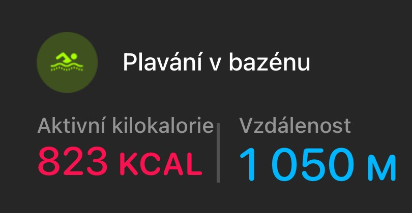
{kind=link}
3.únor
Bolesti
Včera jsem si vytiskl siluety postav, do kterých si zakresluji, kde mě co bolí nebo kde cítím svaly po cvičení. Zelenou barvou zaznamenávám svaly, které po cvičení cítím. Červenou označuji velkou bolest a oranžovou menší nepříjemnosti, které se objevily během cvičení. Jsem zvědavý, jak se postupně budou barvy měnit.
V noci jsem se také registroval na Olympijský běh, který proběhne v Brně 18. června. A protože jsem byl mezi prvními přihlášenými, dostanu sportovní tričko v ceně startovného.
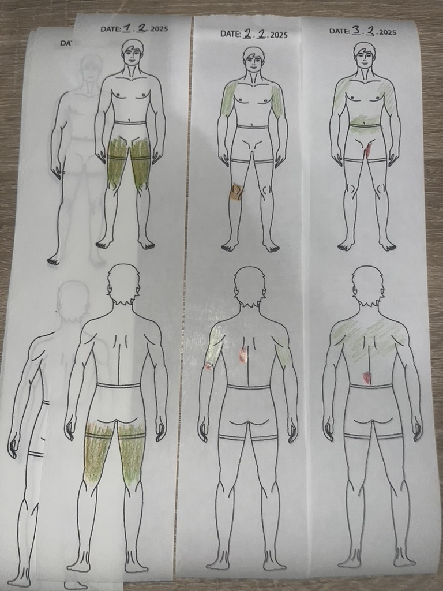
{kind=link}
2.únor
Expandér
Jako každý den jsem si dal jógu a pokračoval cvičením podle videa. Dnes bylo na programu cvičení s expandérem, který už doma mám, ale bohužel je asi moc krátký, takže cviky nebyly tak intenzivní, jak bych si přál. Nakonec jsem to završil pětiminutovým tréninkem na ABS.
1.únor
Práce a cvičení
Postupně zjišťuji, že život s hodinkami je o něco příjemnější. Dnes jsem sice strávil celý den v práci, ale i tak mám na hodinkách zaznamenáno spoustu pohybu, včetně stání a cvičení. Dnešní trénink byl o něco jednodušší – zahrnoval dýchací jógu a posilování rukou, které nebylo příliš náročné. Nakonec jsem to ale završil pořádným HIIT cvičením, takže se teď cítím opravdu skvěle. Navíc jsem začal novou výzvu od FITFAB Strong.
Obrázek sdílím s vámi, abyste si mohli zacvičit také!

Leden
31.leden
Hodinkování
Druhý den testuji hodinky a zatím jsem velmi spokojen. Ještě včera se mi podařilo uzavřít i poslední kroužek. Dnes ráno jsem hned splnil dva – pohyb a cvičení. Momentálně mám nastavený pohybový cíl na 250 kilokalorií a cvičení na 30 minut. Cvičení si prozatím nechám na 30 minut, ale pohyb možná časem zvýším, pokud zjistím, že ho zvládám snadno. Zatím tomu ale dám ještě chvíli čas.
30.leden
Hodinky
Ještě včera v noci jsem si zprovoznil Apple Watch a dnes už naplno testuji, co všechno zvládnou. Musím říct, že už po probuzení jsem měl radost, protože jsem měl rovnou změřený spánek.
Hned ráno jsem si zacvičil – dal jsem si dvě videa od Yoga Dose, konkrétně den 11 a 12, a pokračoval velmi vyčerpávajícím videem ROCK Strongest. Dnes se mi tak podařilo splnit všechny kroužky, jen si ještě budu muset párkrát stoupnout, abych uzavřel i ten poslední.
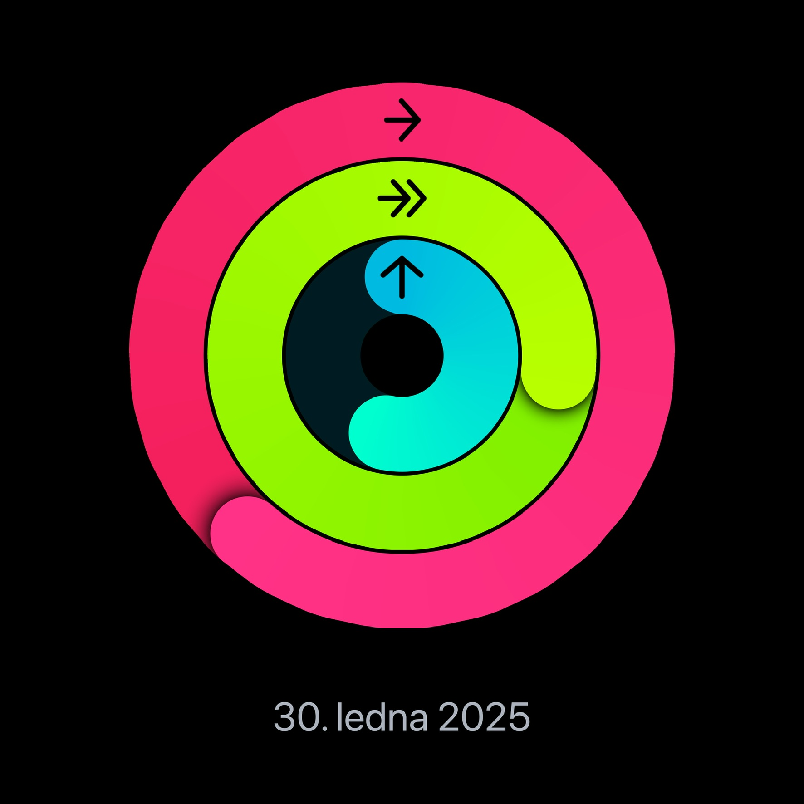
{kind=link}
29.leden
Výlet do Prahy
Za odměnu jsme dnes vyrazili do Prahy. Prvním bodem výletu byla Kunsthalle s úžasnou výstavou umělkyně Chiharu Shiota. Následně jsme zamířili na Kampu, kde jsem již podruhé shlédl výstavu Identita, a poté rovnou na oběd do italské restaurace, kde jsem si dal nejlepší pizzu za poslední dobu.
Po obědě jsme navštívili výstavu fotografií Libuše Jarcovjákové a jako poslední galerijní zastávkou se stal DOX. Ve zbytku času jsme ještě zavítali do Foodstocku – veganského podniku, kde mají ty nejlepší Gyoza knedlíčky.
(Jako bonus dnes přikládám fotku pizzy)
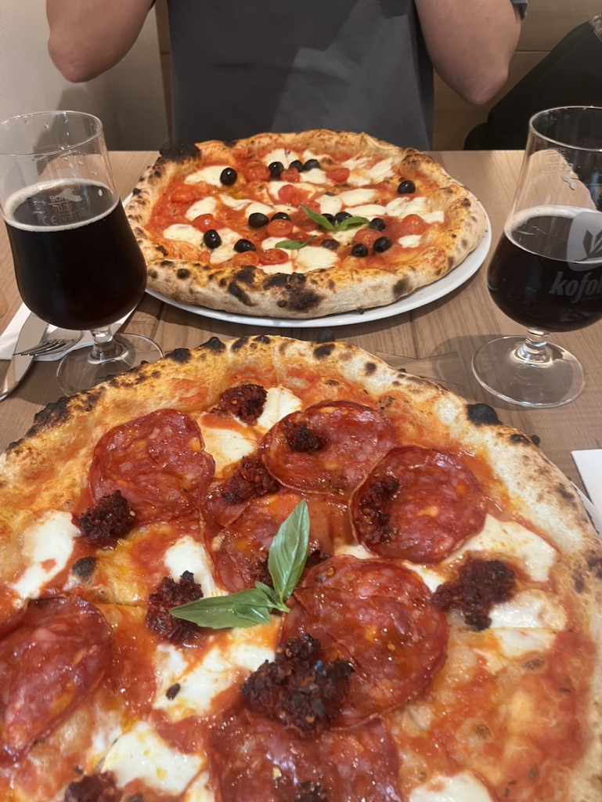
{kind=link}
28.leden
Státnice
Po probuzení jsem si zacvičil desátý den programu Yoga Dose a absolvoval lekci EXPLODE Stronger zaměřenou na intervalové cvičení.
Po cvičení jsem se věnoval hygieně, abych se připravil na státnice, a ještě jsem si pro jistotu dostudoval posledních pár věcí.
Následně jsem vyrazil na státnice, které jsem úspěšně zvládl.
27.leden
Cvičení a příprava
Ráno na probrání jsem si zacvičil již devátý den z programu Yoga Dose a pokračoval lekcí Be Stronger – Party, která byla velmi zábavnou taneční kardio jízdou.
Dnešní den však převládá sezení u počítače, kdy se ještě připravuji na státnice, které mě čekají již zítra.
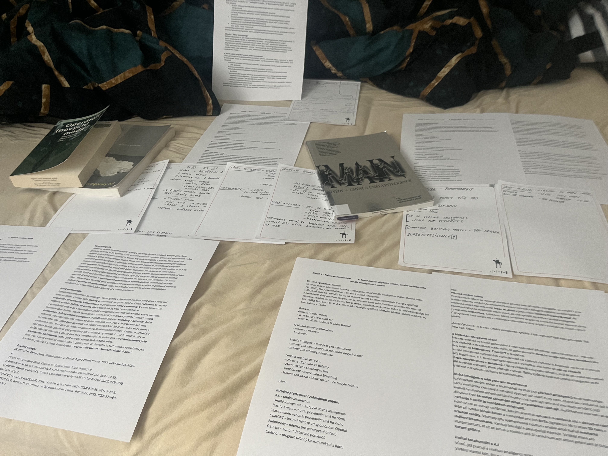
{kind=link}
26.leden
Další neděle
Je tu další neděle, se kterou přichází odpočinkovější den.
25.leden
Gaučování v páru
Dnešní den začal netradičně – vyrazili jsme hned ráno pro nový gauč. To znamenalo takovou menší „stěhovací posilovnu," protože přenášení gauče je samo o sobě solidní workout. 😄
Večer jsme se pustili do párové jógy. Bylo to něco úplně jiného než klasické cvičení, na které jsem zvyklý. Párové cviky jsou o dost náročnější, protože vyžadují nejen sílu a rovnováhu, ale i spolupráci a vzájemnou synchronizaci. I přes obtížnost to ale byla velká zábava a skvělý zážitek!
24.leden
Tři jógy a jedny stehna
Dnešní den jsem zasvětil pořádnému cvičení. Začal jsem sedmým dnem jógy, který byl spíše klidnější a zaměřený na relaxaci a lehké protažení. Využil jsem energii a hned navázal osmým dnem jógy, který byl úplným opakem – velmi intenzivní a silový trénink, který mě opravdu donutil máknout.
Poté jsem si dopřál protažení nohou, což mi po předchozích dnech skvěle bodlo. Na závěr jsem si ještě přidal Lower Body cvičení, které mi dalo zabrat hlavně na stehna. Celkově jsem dnes zvládl pořádnou kombinaci klidného i náročného tréninku a mám ze sebe dobrý pocit! 😊
23.leden
Stehna a kyčle
Dnes jsem začal šestým dnem jógy. Stále pociťuji bolesti kyčlí, což mi komplikuje provedení některých balančních pozic. Rozhodl jsem se proto více zaměřit na posilování stehen a jejich stabilitu.
Pustil jsem si intenzivní video zaměřené na dolní část těla Lower Body, které mi dalo pořádně zabrat. Po cvičení jsem měl stehna úplně v ohni, což vnímám jako znamení, že jsem na správné cestě.
Nakonec jsem si přidal ještě video o tom, jak se naučit rozštěp. Obsahovalo spoustu skvělých cviků na protažení nohou a zlepšení flexibility, což by mohlo pomoct i mým kyčlím.
22.leden
Míček, činky
Ráno jsem si zacvičil s nově pořízeným míčkem. Cvičení na nohy s ním je pro mě velmi přínosné, zvláště protože mám plošší nohy. Míček mi také skvěle posloužil k mačkacím cvičením na ruce, což se ukázalo jako překvapivě efektivní.
Dále jsem otestoval svou sílu a výdrž s dvoukilovými činkami. Držel jsem je v napnutých rukou, abych prověřil svaly a výdrž. Zatím jsem vydržel dvě minuty, což považuji za solidní výkon. Postupně se budu snažit tento čas ještě prodloužit.
21.leden
Workshop a Nosferatu
Dnes jsem se zúčastnil workshopu programování hudby v programu SuperCollider. Workshop byl skvělý, i když velmi dlouhý. S přicházející tmou na mě padala únava, ale i tak jsem si odnesl spoustu nových zkušeností, které určitě využiji ve své budoucí tvorbě.
Po workshopu jsme ještě vyrazili pro chybějící míček na cvičení a zakončili den návštěvou kina. Šli jsme na film Nosferatu. Už jsem viděl předchozí verze tohoto filmu z let 1922 i 1979, ale musím říct, že tento byl pro mě zatím nejzajímavější.
20.leden
ABS a kyčel
Jak jsem si slíbil, dnes jsem se pustil do cvičení. Začal jsem jógou od Yoga Dose a zvládl jsem den 3 a 5. Myslel jsem, že už mám veškeré potřebné vybavení na cvičení, ale dnes jsem zjistil, že mi přece jen něco chybí – míček. Nepodařilo se mi najít žádnou alternativu, a tak jsem jedno z videí raději přeskočil.
U jógy jsem pocítil bolest v levé kyčli při balanční pozici. Snažím se přijít na to, kde může být problém – zda je to otázka slabších svalů nohou, nebo ještě nerozhýbané kyčle. Proto jsem se rozhodl zakončit dnešní trénink speciálním procvičením kyčlí.
Předtím jsem si ještě zaposiloval ABS legs – dnešní cvičení bylo tedy pořádnou zkouškou pro břicho. Přesto si všímám, že jsem vylepšil svou techniku práce s břišními svaly, což je skvělý pocit.
19.leden
Poklidno
Vstávání ráno v téhle tmě je opravdu náročné, ale práce je práce. Venku bylo šero, přesto odpoledne dorazilo dost návštěvníků. Dnes už si cvičení nechám ujít, ale zítra mám volný den, takže to zase pořádně rozjedu. V únoru plánuju začít běhat venku, až budu mít za sebou všechny důležité události, jako jsou státnice a přijímačky. Nechci riskovat, že bych onemocněl.
18.leden
Nákupy po týdnu
Po týdnu jsem se znovu vydal na nákupy. Konečně jsem si pořídil zimní boty – ideální načasování na leden! Zaskočil jsem také k operátorovi, abych si vyžádal slevu na hodinky, kterou mi nabídli. Bohužel je nemají skladem, takže budu muset počkat asi tři týdny. Na závěr jsem si udělal radost korkovými bloky na jógu.
17.leden
Volno
Dnes mě pro změnu čekal den volna, a tak jsem si dovolil chvilku poležet déle. Jakmile jsem vstal, pustil jsem se do cvičení – 40 minut programu Work Stronger a poté druhý den z Yoga Dose.
16.leden
Kopec mírnější a kroužek II.
Dneska jsem razil do práce na mírnější kopec. Kroužek chůze v kondici splněn. :)

15.leden
Kopec a kroužek
Dneska jsem razil do práce na kopci. Kroužek chůze v kondici splněn. :)
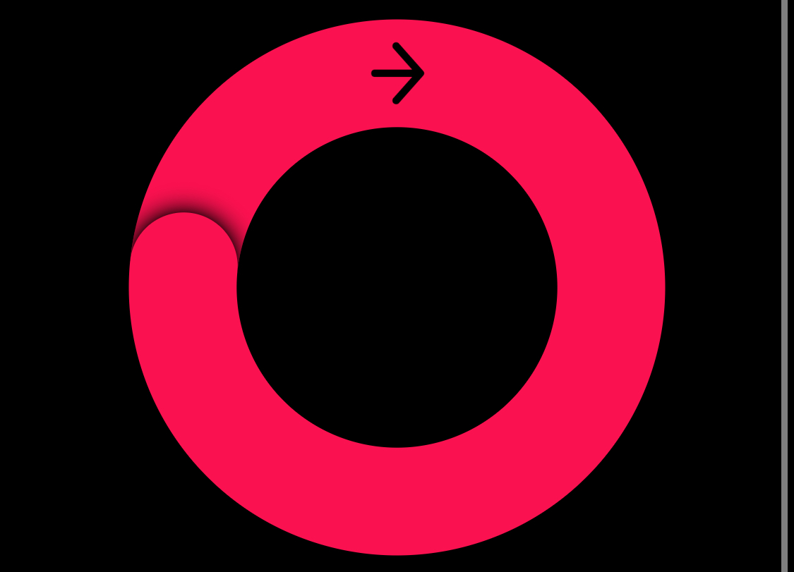
{kind=link}
14.leden
Pořádné cvičení
Stejně jako minulý týden jsem se po pár dnech volna rozhodl pořádně si zacvičit. Po svém oblíbeném espresso tonicu jsem dnešní cvičení odstartoval jógou z 30denního programu Yoga Dose, se kterým jsem cvičil před čtyřmi lety. První video je zatím spíše pro začátečníky, takže mi posloužilo jako ideální rozcvička.
Poté jsem naskočil na svůj osvědčený program BE Stronger, který už cvičím poněkolikáté a pokaždé na sobě vidím pokroky. Po tomto videu jsem pořádně cítil nohy, a tak jsem si je protáhl cvičením zaměřeným na kyčle. Na závěr jsem se vrhl na Sixpack Shortcut.
V příštích dnech bych se chtěl více zaměřit na posilování nohou, protože při několika dřepech jsem si uvědomil, že tady mám ještě co zlepšovat.
Přikládám vám dnešní videa – třeba se někdo přidá!
13.leden
Inventura
Dnes mě čekala inventura v práci, při které jsem přeskládal spoustu velkých knih a nachodil opravdu hodně kroků. I když jsem si dnes nezacvičil, měl jsem i tak pořádnou fyzickou námahu.
12.leden
Neděle
V neděli se nedělá. :)
11.leden
Nákupy
Dnes jsem si pořídil podložku pod koleno na cvičení jógy a k tomu i pásek na protahování. Mám z toho velkou radost a už se nemůžu dočkat, až všechno vyzkouším při cvičení. Plánoval jsem si také koupit korkovou karimatku, ale bohužel ji neměli skladem. Budu si ji tedy muset objednat z e-shopu.
10.leden
Je pátek
Dnes jsem si dal odpočinkový den. Čekám, až se mi ozve operátor ohledně hodinek, tak si užívám trochu klidu.
9.leden
Chytré hodinky
Po včerejším cvičení mě napadlo, kolik kalorií jsem mohl spálit, a tak jsem se rozhodl dnes zajít k mobilnímu operátorovi. Mám v plánu zjistit, zda bych mohl získat slevu na chytré hodinky k tarifu. Momentálně mám zaznamenané pouze aktivity jako běh a chůze, které teď v zimě nedělám tak často. Hodinky by mi mohly pomoct lépe sledovat i cvičení a další aktivity. Tak uvidíme, jak lov na hodinky dopadne!
8.leden
Pekelný trénink
Texty mám dopsané a odeslané ke konzultaci, takže se cítím silněji a lépe. Tím, že mám teď volnější čas, jsem se rozhodl pro větší cvičení. Dnes jsem si zacvičil podle čtyř videí. Začal jsem robotickou lekcí, pokračoval pekelnou jógou, poté jsem si dal 10minutovou posilovací tabata lekci a vše zakončil odpočinkovější jógou. Celkem to bylo cvičení o délce hodiny a čtvrt. Dnes to bylo opravdu intenzivní, hlavně na břicho a záda, a cítím, že to stálo za to!
7.leden
Power
Dnes jsem se věnoval psaní a dokončování tezí ke státnicím, ale i přesto jsem si našel čas na cvičení. Začal jsem pětiminutovým workoutem a pokračoval intenzivní power jógou. Dnes jsem si dal opravdu do těla, hlavně jsem to cítil na rukou, které mám ještě trochu oslabené po nemoci. Ale pomalu se dostávám zpět do formy.
6.leden
Rýmová jóga
Ráno jsem si konečně připravil svůj oblíbený espresso tonic. Poté jsem se pustil do péče o rostliny – odstranil jsem ty, které už nemají šanci na přežití, a přesunul ostatní. Bohužel letos v zimě spousta mých kytek pomalu odumírá, takže uvidím, které z nich přežijí do jara.
Zvážil jsem se po svátcích a zjistil, že se mi váha vrátila zpět, ale nevadí. Teď budu mít konečně dostatek prostoru na pořádné cvičení. Dnes jsem si dopřál flow jógu zaměřenou na zpevnění celého těla. Cvičení bylo příjemné, i když je trochu náročné cvičit jógu s plným nosem kvůli přetrvávající rýmě. :)
5.leden
Novoroční lenost 2
Ráno jsem si myslel, že nevstanu. Neustále jsem odkládal budík, protože venku byla stále tma a zima. Tento víkend je můj poslední pracovní v tomto měsíci, poté mě čeká už jen jedna pracovní neděle, jinak budu chodit do práce jen ve všední dny.
Novoroční lenost mě ale neopustila ani dnes. Celý den jsem jen zíval a měl pocit, že bych nejradši spal. Na zítřek mám však jasně dané plány. Po pořádném vyspání si zacvičím a pustím se do psaní textů ke státnicím.
4.leden
Novoroční lenost
Dnes jsem byl opět v práci, ale musím přiznat, že na mě dolehlo něco, co bych nazval novoroční leností. Myslím si, že je to docela normální pocit – po prázdninách, které jsem vlastně ani pořádně neměl, protože jsem byl nemocný a věnoval se přípravě na státnice.
Takže to dneska nebudu nijak hrotit. Po práci si prostě lehnu, odpočinu si a pustím si něco na relax. Někdy je třeba se prostě jen vypnout a načerpat energii na další dny.
3.leden
Světelný park
Dnes jsem se ke cvičení nedostal. Cítím, že moje imunita ještě není úplně v pořádku, a nechci nic uspěchat. Lepší je teď trochu ubrat a neriskovat, že se nemoc vrátí.
Večer jsme si ale udělali příjemnou procházku ve světelném parku, což mě potěšilo – alespoň trochu pohybu na čerstvém vzduchu. Teď mě čeká sprcha a pak konečně poslední epizoda Squid Game. Ideální zakončení dne!
2.leden
Čtení a práce
Nový rok začal v klidném tempu. V práci bylo dnes poměrně volno, což mi umožnilo ponořit se do četby, kterou potřebuji zpracovat ke státnicím. Bylo příjemné mít čas na soustředění.
Zítřek mám už naplánovaný – čeká mě cvičení, abych rozhýbal tělo, a pak se budu plně věnovat práci na státnicích. Ať to jde hladce!
1.leden
Nový rok
Přeji všem krásný a šťastný nový rok! Ať je plný radosti, zdraví, úspěchů a nezapomenutelných zážitků.
Prosinec
31.prosinec
Silvestr
Dnešní den jsme prožili poměrně poklidně, i když s nádechem zábavy. Dnes jsme šli spát až ve dvě ráno, protože jsme hráli dlouhou a napínavou karetní únikovou hru. Během dne jsme se každý věnovali svým věcem – někdo pracoval, jiný se učil. Odpoledne jsme si ale udělali malou procházku kolem chatek, což bylo příjemné zpestření. Nechyběla ani zábava na sněhu – ježdění na talíři se stalo hitem dne!
Teď už se pomalu chystáme na večerní oslavu. Silvestr je tu, tak ať stojí za to!
30.prosinec
Procházka starého roku
Dnes jsme se vydali na přednovoroční vycházku kolem Vírské přehrady. Byla to opravdu krásná procházka. Moc lidí jsme cestou nepotkali, ale příroda nám to bohatě vynahradila – viděli jsme nádherné zamrzlé rampouchy, které zdobily skály. Po procházce jsme zamířili na oběd do Bystřice. V restauraci to bylo rušné – postupně jim docházelo skoro všechno jídlo, takže jsem nakonec skončil u klasiky: řízku. Ale i tak to byl příjemný den!
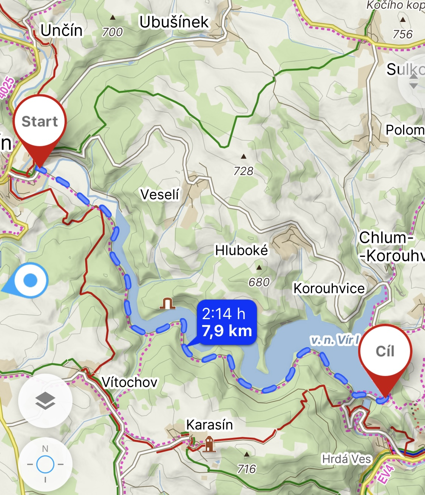
{kind=link}
29.prosinec
Vyrazili jsme na výlet
Konečně mi je dobře, takže jsme mohli vyrazit na chatu oslavit Silvestra. Bohužel budeme muset vynechat wellness, a co se týče lyžování, tak na to nemáme lyže. Ale i tak si to určitě užijeme!
28.prosinec
Klesání
Včera večer jsem měl teplotu 39 stupňů. Byla to chyba jít do práce a snažit se nemoc přechodit. Po návratu jsem se pořádně prospal a během noci jsem spal klidně, bez buzení. Dnes mi teplota postupně klesala, až jsem nakonec úplně bez horečky.
Až budu mít více času, rád bych se zaměřil na to, jak posílit svou imunitu, aby lépe zvládala podobné situace.
27.prosinec
Nemoc den 2
Nemoc stále přetrvává, ale přesto jsem musel do práce. Naštěstí se mi zdá, že se to už pomalu zlepšuje. Doufám, že se brzy dám úplně do pořádku. 💪
26.prosinec
Neklid
Bohužel se dnešní klid a odpočinek změnily v nemoc. Doufám, že mě to brzy přejde, protože za dva dny máme odjíždět na pronajatou chatu. Držte mi palce, ať se dám rychle do pořádku! 🤞
25.prosinec
Druhý den vánoční
Druhý den Vánoční byl ve znamení rodinného setkání a pokračování s rozdáváním dárků. Co se týče sportu, ten se letos s Vánocemi zcela minul, ale nevadí – vše doženu později. Vánoce jsou přece o klidu, pohodě a odpočinku, a přesně tak jsem je dnes vnímal. 🎄
24.prosinec
Štědrý den
Všem přeji veselé Vánoce a krásný nový rok! 🎄✨ Hlavně si dnes dopřejte zasloužený odpočinek. Pokud máte chuť si trochu zasportovat, klidně do toho, ale pamatujte, že dnešek není o výkonech – užívejte si klidu, pohody a kouzla svátečního dne. 😊
23.prosinec
Dílničky
Poslední den před VánociDnešní den jsem strávil na radnici v dílničce pro děti. Stejně jako každý rok mě to moc bavilo – je radost sledovat, jak si děti tvoření užívají. Loni jsem byl na stánku s origami Santy, a letos jsem pomáhal u stánku, kde jsme vyráběli přáníčka z mašlí nebo dokonce vyšívali. Přikládám fotku jednoho přáníčka, které jsme společně vytvořili.
Po dílničkách jsme, jako už tradičně, zakončili den na vánočním pivu. Letos se naše debata hodně stočila k pedagogickým tématům, což není překvapivé – všichni máme nějaké zkušenosti s prací s dětmi, ať už z táborů, kroužků nebo přímo ze školství. Bylo fajn sdílet zážitky a nápady.
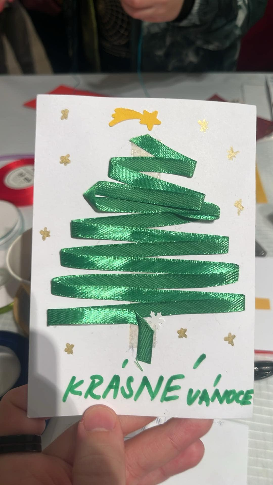
{kind=link}
22.prosinec
Líný den
Je to znát – dnes je poslední adventní neděle. Za dva dny je Štědrý den a já se už pomalu mentálně nalazuji na Vánoce. Zítra, jako každý rok, vyrážím vypomáhat na vánoční radnici, kde s táborem tradičně pořádáme dílničky pro děti.
Dnešek byl ale, co se produktivity týče, úplně líný. Byl jsem v práci, kde bylo poměrně klidno – lidí moc nechodilo. Přesto jsem nebyl schopen být nějak aktivní, dokonce jsem si ani nečetl, když byl prostor. To už je na mě opravdu nezvyklé.
Večer doma jsem si nakonec nezacvičil. Ale vzhledem k tomu, že jsou Vánoce skoro za dveřmi, možná si takovou lenivost mohu výjimečně odpustit, no ne? 😊 Na příště si ale slibuji, že se polepším!
21.prosinec
Málo místa na jógu
Rozhodl jsem se dnes zacvičit jógu u sebe v pokoji. Bohužel jsem ale zjistil, že na to nemám dostatek prostoru – zvlášť na některé širší pózy, při kterých jsem neustále narážel do nábytku. Proto jsem jógu tentokrát vynechal a místo toho si dal cvičení zaměřené na výdrž s činkami.
Oproti minulému tréninku jsem zaznamenal zlepšení – vydržel jsem o celou minutu déle. Takže i přesto, že jsem jógu nakonec přeskočil, mám ze sebe dobrý pocit. Cítím, že postupně dělám pokroky.
20.prosinec
Odpočinek č.2 a úklid č.2
Dnešní volný den jsem opět využil k dokončování restů a pořádnému cvičení. Ráno jsem začal 40minutovým cvičením, které kombinovalo cardio a core, a poté jsem přidal balanční jógu. Tato kombinace byla skvělá – nejprve jsem své tělo pořádně rozhýbal a procvičil a následně ho během jógy uklidnil. I po cvičení mě tělo stále příjemně hřálo, takže jsem si dal ledovou sprchu, což mám po cvičení v oblibě. Je to pro mě daleko příjemnější než sprchování horkou vodou.
Pokračoval jsem také v plnění dalších restů, konkrétně jsem se pustil do úklidu číslo 2. Kromě toho jsem si dal tu práci a konečně zkompletoval své playlisty, které jsem následně vložil na stránku o projektu. Tak se určitě mrkněte!
I když jsem se dnes nevěnoval přípravě na státnice, cítím, že jsem měl produktivní den.
19.prosinec
Odpočinek
Dnes jsem si dopřál malý mentální odpočinek a zároveň jsem dodělal resty, které jsem měl. Konečně se mi podařilo zabalit všechny dárky na Vánoce, uklidil jsem doma a dal si intervalové cvičení. To bylo náročné a ještě několik hodin poté jsem cítil únavu ve svalech, ale teď už je vše v pohodě.
Rozhodl jsem se na chvíli odpočinout od školních povinností, neřešil jsem státnice ani přijímačky. Místo toho jsem si pustil několik dílů z první série RuPaul’s Drag Race, kterou jsem neviděl už roky.
18.prosinec
Obhajoba
Závěrečné prezentace děl zabraly zhruba sedm hodin. Ráno jsem vyrazil už v deset, což znamenalo, že jsem si nestihl zacvičit. Domů jsem dorazil až po osmé hodině večer, kdy jsem se už jen najedl.
I přesto mám ze dnešního dne dobrý pocit. Myslím, že obhajoba proběhla v pořádku, i když jsem byl ve stresu. :)
A zítra si to cvičení jistě vynahradím. A jako bonus přidávám fotku díla.
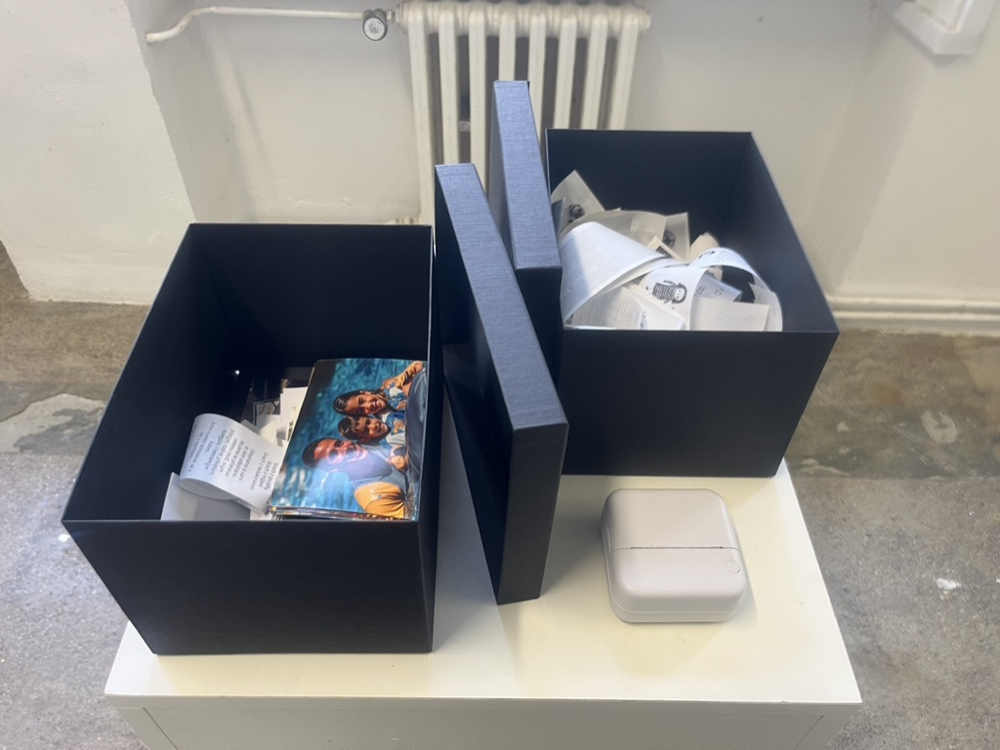
{kind=link}
17.prosinec
Šplouchance
Plavání je velmi zvláštní sport, když se podívám na veřejnost. Píšu to proto, že jako běžec, když potkám jiného běžce, mávneme si, pozdravíme se a běžíme dál nebo chvíli pospolu. Ale u plavání to vypadá, že vítězí ten, kdo nejvíce šplouchne rukou do vody. Často se mi stává, že musím odvracet hlavu od ostatních plavců, protože mě nechtěně ohodí vodou. Asi si budu muset pořídit plavecké brýle.
Po plavání jsem si odpočinul a večer se vydal do školy nainstalovat své dílo k veřejné prezentaci. Držte mi palce, snad to zítra dobře dopadne.
Ze dnešního dne mám dobrý pocit – uplaval jsem 750 metrů a nainstaloval své dílo.
16.prosinec
Po pauze
Konečně! Po čtyřech dnech jsem si ráno připravil svůj oblíbený espresso tonic a hned poté si dal skvělé CORE strong cvičení zaměřené na posilování břišních svalů. Na začátku jsme se krásně rozcvičili, a pak následovalo svižné a intenzivní posilování středu těla. Po cvičení se cítím naprosto skvěle!
Během tréninku ze mě lil pot, takže jsem si při každé pauze musel utírat obličej do ručníku. Dnešek mi opravdu zvedl náladu a znovu mě nakopnul.
15.prosinec
Poslední tažení
Poslední den ze série pracovních dní. Jsem rád, že si zítra budu moct trochu přispat. Už začínám být unavený a rýma mě stále neopouští. Až do poslední chvíle pracuji na projektu, který budu v úterý instalovat a ve středu prezentovat ve škole. Kvůli tomu jsou teď mé dny plné práce a tvorby, a vlastně jsem ani neměl moc chuť si zacvičit.
Věřím, že se to brzy všechno uklidní, a budu mít zase prostor i energii na to, abych si mohl během dne zasportovat.
14.prosinec
Práce, řízení, parkování
Teď už sedím v klidu doma, ale dnešek nebyl vůbec sportovní. Opět jsem byl v práci, kam jsem jel autem, a z práce zase zpět. Potřeboval jsem ještě vyzvednout vánoční dárek, takže jsem se zastavil v blízkém nákupním centru, kde na mě čekala objednávka. Bohužel vánoční shon už je v plném proudu, a poprvé se mi stalo, že v nákupáku nebylo vůbec kde zaparkovat. Po dvaceti minutách kroužení a strávení času v koloně na střešním parkovišti jsem to vzdal a zaparkoval raději jinde. Zboží jsem vyzvedl, ale lidí tam bylo opravdu jako dav na koncertě. Cestou domů jsem se ještě zastavil v obchodě pro nudle a sójovku, takže dnes jsem v autě strávil celkem hodinu.
V práci to bylo dnes opravdu intenzivní. Chodily davy zákazníků a navíc mi nefungovala Wi-Fi, takže jsem se nachodil po obchůdku, když jsem kontroloval různé cenovky. Ale musím se pochválit za svoje pracovní tempo, protože jinak bych nezvládl obsloužit ani polovinu zákazníků.
PS: Rýma se mě stále drží.
13.prosinec
Rozjezd/Dojezd
Je po půlnoci a opouštíme sál, kde se odehrál jeden z nejenergičtějších koncertů, po kterém jsem si připadal, jako bych absolvoval několik cardio lekcí. Rozjezd nám měl jet v jednu hodinu, takže jsme si ještě dali poslední pivo. Vyrazili jsme na zastávku, ale rozjezd nám ujel přímo před nosem, takže jsme nakonec zavolali Uber.
Ráno mě přepadla silná kocovina. Přece jen jsem včera vypil poměrně dost alkoholu, a mé tělo na to poslední dobou není příliš zvyklé, protože se snažím žít zdravěji. Když už někde jsem, obvykle si dám jen jedno pivo nebo drink. Navíc už ve středu jsem pociťoval náznaky přicházející nemoci, která v kombinaci s alkoholem dnes opravdu udeřila. Večer už se ale cítím o něco lépe, takže dnešní volný den byl zaměřený hlavně na odpočinek a rekonvalescenci.
12.prosinec
Bar a koncert
Po práci jsem šel na večeři s Olliem. Byli jsme v Baru, který neexistuje, kde si každý z nás dal burger a dva drinky. Tento podnik máme rádi díky zajímavé nabídce nápojů. Jako obvykle jsem si objednal drink ,Anonym,, což znamenalo, že jsem si nechal namíchat záhadný drink, aniž bych věděl, co přesně piji.
Po večeři jsme zamířili na koncert skupiny MIDI LIDI. Bylo to naprosto úžasné. Koncert byl kompletně vyprodaný, což bylo poznat – lidí tam bylo hlava na hlavě. Skupina odehrála celkem 17 písniček a celý koncert trval dvě hodiny. Ty dvě hodiny jsme protancovali tak intenzivně, že z nás lil pot a postupně jsme sundávali vrstvy oblečení. Koncert skončil přesně o půlnoci.
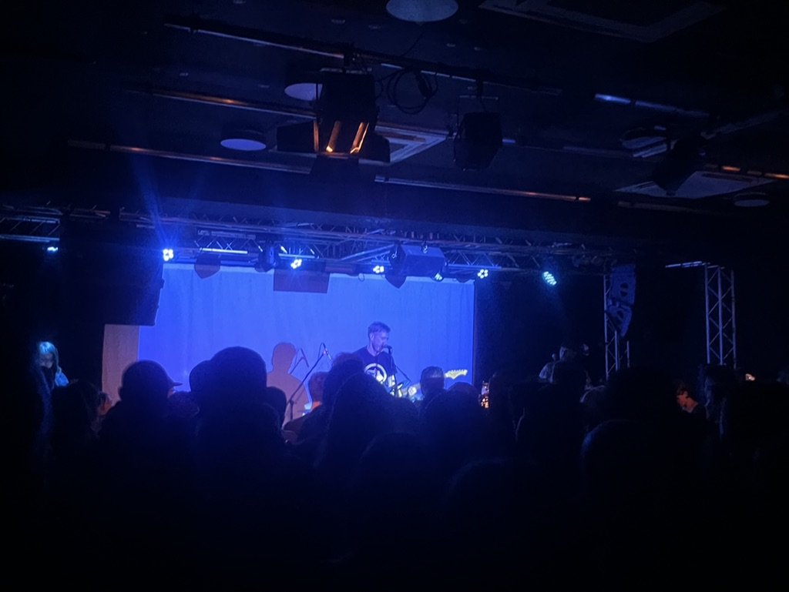
{kind=link}
11.prosinec
Progres
Po včerejším cvičení mě ještě trochu bolí svaly, ale při dnešní józe jsem zvládl udržet delší dobu pozici v kliku. Vnímám tedy, že nějaký pokrok tu určitě je. Také si všímám, že se mi zlepšuje držení těla – daří se mi lépe udržovat narovnaná záda, což mě moc těší.
Dnes to ale už zabalím, protože na mě leze rýma a bolí mě v krku, takže se necítím úplně fit. Plánuji si dopřát pořádný odpočinek a dobře se vyspat. Zítra mě čeká práce a večer koncert skupiny MIDI LIDI. Dnešek zakončím písničkou Strom, která má úžasný rytmus – ideální třeba na běh.
Enjoy it!
10.prosinec
Selhání - zlepšení
Je možné selhat ve sportu? Přemýšlím nad tím kvůli dnešnímu dni, kdy jsem se postavil na váhu – pravidelně se vážím každý týden. Dnes mi váha ukázala kilo navíc. Říká se, že při hubnutí je těžké sledovat čísla na váze, protože se tuk mění ve svaly. Bohužel to jde ale nějak pomalu. Přesto si tím nenechám kazit náladu.
Mé dnešní selhání však přišlo při samotném cvičení. Po třech pracovních dnech, kdy jsem se k žádnému cvičení nedostal, jsem si to chtěl dnes vynahradit intenzivnějším tréninkem. Začal jsem pětiminutovým workoutem na celé tělo. Stále si uvědomuji, že mám určité mezery ve svalových cvičeních, na kterých musím ještě pracovat. Občas u některých cviků zpomalím nebo si dám pauzu. Po skončení následovalo další video, tentokrát 25minutové Power Strength, a ukázalo se, že to je skutečně výzva.
Do poloviny videa jsem se ještě držel, ale v druhé polovině už bylo mé tělo na hraně. Stehna tuhla, ruce byly unavené, levé zápěstí mě bolelo natolik, že jsem se o něj nemohl pořádně opřít, a moje skoky do výšky spíš připomínaly hod kamínkem. Dokonce jsem slyšel praskání kloubů. Při poslední sérii jsem to už vzdal, posadil se a s obdivem sledoval předcvičujícího. Abych se po tomto výkonu trochu uklidnil, zakončil jsem trénink jógou na protažení kyčlí, která mi dnes opravdu přišla vhod.
Mé tělo bylo zcela zahřáté a zpocené. I když jsem si během cvičení připadal, že jsem dnes selhal, vzpomněl jsem si na Murakamiho. Při jeho triatlonu také přišla chvíle, kdy plavání vzdal. Vylezl z vody a šel znovu – potřeboval zjistit, co dělá špatně. Na druhý pokus se mu plavalo lépe. Nevzdal se a příští rok trénoval s motivací zvládnout další závod až do konce. Vnímám to dnes podobně. I když jsem trénink nedokončil, beru to jako příležitost upravit svůj plán.
Nemohu se znovu takto přepínat. Proto teď budu oddělovat cardio a posilování na dvě samostatná cvičení. Každý den zařadím kliky, prkno a dřepy a budu sledovat svůj postup. Musím respektovat své tělo – nebudu na sebe tlačit a budu se posouvat jen tak, jak mi mé tělo a svaly dovolí. Výdrž už mám dobrou, ale musím nechat svaly pracovat svým tempem.
I teď, při psaní tohoto příspěvku, cítím, jak mi v žilách proudí horká krev, jak mi tepe srdce a tělo je stále napjaté. Pomohla mi až velmi studená sprcha, která mě zklidnila. Dnešní den však vnímám jako velmi plodný. Díky tomuto cvičení jsem přišel na myšlenky, které mě – a možná i vás – mohou posunout dál.
Pro dnešek se s vámi loučím.
9.prosinec
Konec knihy
Jak jsem již včera avizoval, dnes jsem knihu dočetl, a jak jsem řekl, tak se stalo.
Poslední kapitola mi přišla jako nejupřímnější text o Murakamiho sportovních výkonech. Rozepisuje se v ní o své účasti na triatlonu a o všech překážkách, se kterými se potýkal. A upřímně si nejsem jistý, jak moc se chci rozepisovat, o čem v této kapitole píše, protože bych nerad vyzradil příliš mnoho těm, kteří se na knihu teprve chystají. Přesto si tu dnes odložím jednu větu, která mě oslovila. Pro vás ji ale zcela vytrhnu z kontextu:
„No, jakmile bude jednou závod zahájen, nebudu už (nejspíš) mít kdy myslet na hlouposti…“
8.prosinec
Maraton a Murakami
Zase jsem v práci, ale dneska je tu větší klid. Nechodí sem tolik lidí jako včera, takže jsem si našel čas na čtení. Stihl jsem přečíst tři kapitoly a zítra dočtu poslední.
Musím říct, že mě Murakamiho psaní o jeho maratonech velmi překvapilo. Popisuje své předchozí maratony (42,195 km), které zaběhl bez přestávky a s dobrým časem. Když si to čtu, cítím se trochu zahanbeně. Vzpomněl jsem si na svůj závod okolo přehrady a na to, jak jsem byl pyšný. :)
Ale uvědomuji si, že každý z nás má jinou startovní čáru, potřebuje jinou přípravu a dosahuje jiných výsledků. Co mě však opravdu inspirovalo, je myšlenka, že bych si jednoho dne mohl také zaběhnout maraton. A kdo ví – třeba si jednou splním sen a zaběhnu originální maraton z Marathonu do Athén, o kterém Murakami píše.
Tak snad, až někdy budete číst můj blog za pár let, budu psát o tom, jak jsem zaběhl svůj první maraton, a možná to bude právě v Řecku.
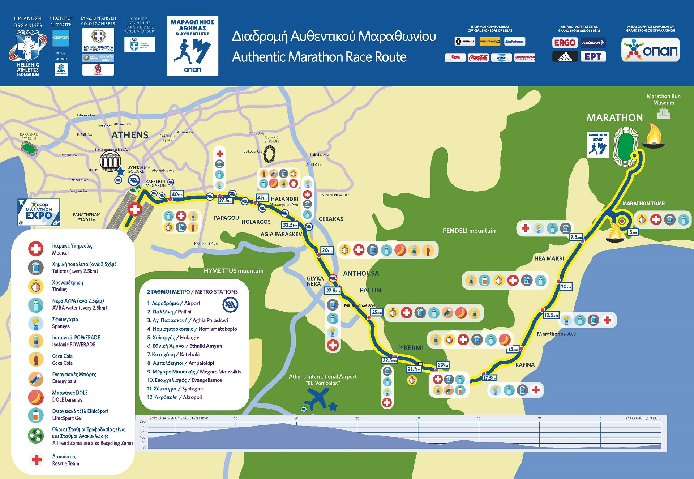
Trasa autentického běhu maratonu
(zdroj: Athens Authentic Marathon)
{kind=link}
7.prosinec
Vánoční trhy
Po práci jsme byli s rodinou na vánočních trzích. Protože byla sobota, hemžilo se to tam lidmi. Kličkovat mezi nimi bylo jako překonávat opičí dráhu. Vánoční trhy vlastně trochu připomínají sportovní hry – všude spěcháte, vyhýbáte se davům, a ještě se přitom protáhnete při nakukování do různých stánků.
Musíte držet vytrvalou a stabilní pozici při čekání ve frontě a zároveň být ostražití, aby vás někdo nepředběhl. Když si nesete jídlo, je klíčová pevná ruka, abyste úspěšně prošli mezi lidmi. Pokud je namrznuto, náhle se stáváte nahodilými bruslaři. A hlavně – bez týmové strategie se neobejdete, pokud chcete splnit všechny cíle a dosáhnout pomyslné výhry.
Pro dnešek si myslím, že zápis do blogu stačí. Uvědomuji si, že přirovnávat trhy ke sportovním hrám je trochu potrhlé, ale proč ne?
6.prosinec
Sněží! Vnitřnímu sportu ZDAR!!
Sněží. Vše je pokryté bílou peřinou a město tradičně uvízlo v kolonách. Jsem rád, že dnes nemusím nikam cestovat a mohu si doma v klidu zacvičit. Jsem vděčný, že existuje tolik možností na domácí cvičení, protože za současných podmínek by byl běh venku téměř nemožný. Chodníky se proměnily v kluziště a venkovní teplota vyžaduje minimálně pět vrstev oblečení – a ani to by možná nestačilo. Takže se na nějakou dobu loučím s běháním venku a plně se soustředím na aktivity uvnitř.
Doma už delší dobu cvičím různé druhy tréninků, ať už jde o kardiovaskulární cvičení, nebo jógu. Pravidelně chodím plavat a možná se odhodlám i k návštěvě posilovny. Ještě si to ale promyslím, protože cvičení s vlastní váhou mi přijde smysluplné a účinné.
Co mám ale na zimu určitě v plánu, je bruslení na ledě a snad i moje premiéra na lyžích. Na Silvestra vyrážíme s přáteli na chatu, což bude zahrnovat i lyžování. Nikdy jsem na lyžích nestál, zatím jsem si užíval spíše zimní boby. Musím přiznat, že z lyžování mám trochu obavy, ale mám skoro celý měsíc na to, abych se mentálně připravil.
Jako bonus dnes přidávám fotku ze včerejší mikulášské akce
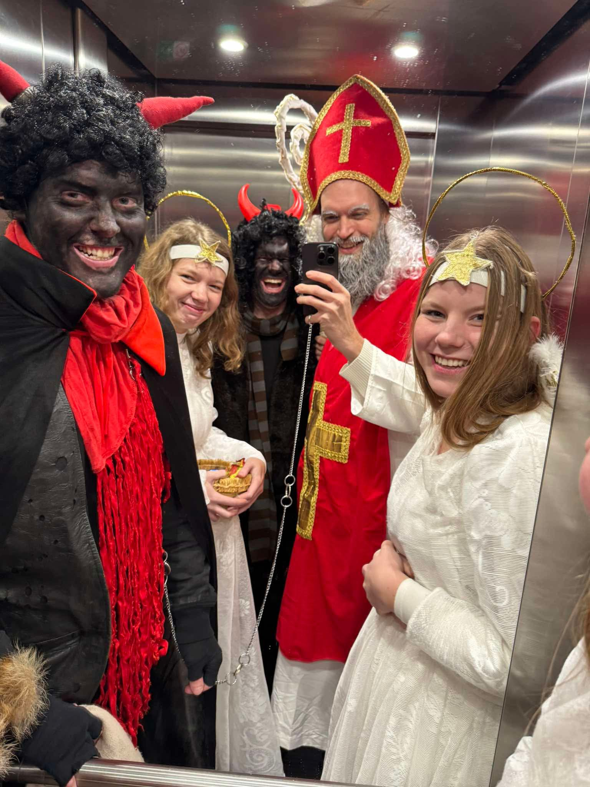
{kind=link}
5.prosinec
Mikuláš, Kyčle a Gaga
Je sice teprve odpoledne, ale už píšu dnešní příspěvek, protože večer nás čeká naše každoroční tradice s táborovými přáteli – obcházení známých jako Mikuláš, čerti a andělé. Abych si uvolnil odpoledne na psaní a dodělání restů, zacvičil jsem si už ráno.
Po včerejším pohybovém workshopu, kde jsem musel kvůli bolesti v kyčli trochu zpomalit, jsem si vybral ranní jógu zaměřenou právě na protažení kyčlí. Jóga byla poměrně krátká, tak jsem ji doplnil půlhodinovým HIIT cvičením, které bylo tentokrát spíš pro zábavu. Šlo o taneční cvičení na písničky od Lady Gaga. Právě díky tomuto zážitku jsem si založil playlist s názvem Fit Fun, který slouží k tomu, aby cvičení bylo nejen efektivní, ale i zábavné. Obsahuje podobné taneční kreace a třeba i stará aerobiková videa z osmdesátek. Brzy se s vámi o něj podělím!
4.prosinec
Meditace, Kardio, Workshop
Ještě včera v noci jsem si dopřál příjemnou meditační chvilku, která mi přišla velmi vhod. Po předchozích náročných dnech jsem byl vděčný za možnost se vypnout, zrelaxovat a uvolnit mysl.
Díky tomu jsem si ráno mohl zopakovat ranní cvičení. Tentokrát jsem zvolil video Kardio Workout, které trvalo 30 minut. Už po 15 minutách ze mě doslova lil pot, takže jsem si musel doběhnout pro potítko. Přesto jsem měl velmi uspokojivý pocit, protože jsem cítil, že si tělo opravdu máklo, a můžu říct, že pozoruju i silový progres.
Během dne jsme měli v ateliéru workshop s naší doktorandkou, zaměřený na pohyb. Na závěr první části proběhla improvizační session, při které jsme pracovali s vyobrazeními ze sakrálních obrazů a soch. Jakmile se mi podařilo naladit na správnou pohybovou vlnu, začal jsem tyto motivy propojovat s jógovými cviky. Ve zkratce to bylo úžasné.
Nyní ještě dolaďuji playlisty, které jsem slíbil sdílet na blogu. Snažím se je upravit a přeorganizovat tak, aby jejich obsah byl přehlednější a lépe využitelný. Jakmile budu spokojený s finální podobou, nasdílím je co nejdříve. Prozatím sdílím dnešní cvičící video.
3.prosinec
Posilovací, nahrávací a čtecí den
Ráno jsem vstával v osm hodin, abych si stihl zacvičit jógu. Rozhodování bylo tentokrát náročné, protože jsem si nemohl vybrat z velkého množství variant. Rozmýšlel jsem mezi ranním protažením a power jógou, ale nakonec zvítězila jóga zaměřená na posilování. Už po pár dnech pravidelného cvičení vnímám, že nabírám sílu na různé cviky, a jde mi to lépe než při prvním pokusu.
Poté jsem vyrazil na workshop do školy, kde jsme ve skupině nahrávali zvuky těla při stresu. Pro zajímavý záznam jsem se rozhodl vylézt na žebřík na vedlejší budově. Výšky obvykle zvládám, rád chodím na rozhledny, ale příliš nemusím nejištěné situace. Tento konkrétní žebřík vypadal dost chatrně, což mi rozhodně nepřidalo na klidu. Přesto jsem se odhodlal vylézt nahoru a zvuk nahrát. Podařilo se mi žebřík zdolat, ale strach z toho, že se každou chvíli rozpadne, ve mně vyvolával nepříjemný pocit neklidu.
Během dne jsem také zvládl přečíst druhou kapitolu knihy od Murakamiho a musím uznat, že s jeho myšlenkami velmi souzním. V této kapitole píše o tom, jak vedl podnik a zároveň začínal jako spisovatel. Když se rozhodl plně věnovat psaní a podnik zavřel, uvědomil si, že jeho nová práce je velmi sedavá. Právě tehdy začal běhat, aby do svého života vrátil pohyb. Líbí se mi, jak podobně uvažuje o sportu, a těší mě, že někdo přemýšlí o pohybu stejně jako já.
Dnes pro radost přidávám GIF, který jsem vytvořil na workshopu v minulém semestru.
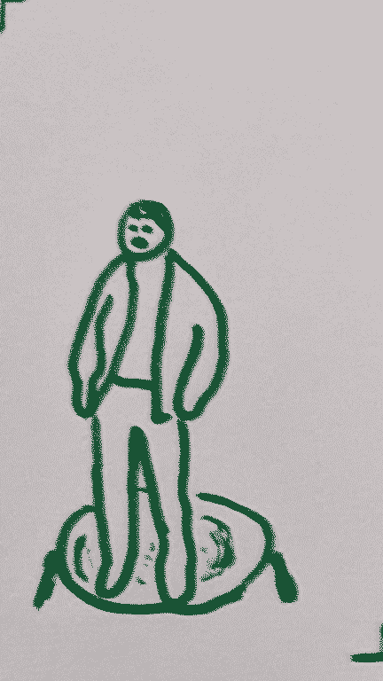
{kind=link}
2.prosinec
První kapitola
Dnes byl poslední den mé série pracovních dní, a celý jsem ho strávil na nohách kvůli inventuře. Po cestě do práce jsem však stihl dočíst první kapitolu z dříve zmíněné knihy od Murakamiho.
První kapitola na mě udělala dobrý dojem a už se těším na další. Zaujalo mě, jak Murakami uvažuje nad takzvaným tichem, které zažívá při běhu. Přemýšlím, jestli se někdy dostávám do podobného stavu klidu, kdy má mysl utichne. Asi ne – většinou se při běhu snažím sám sebe motivovat, což znamená, že mám myšlenky neustále v pohybu.
1.prosinec
První advent
Je po desáté hodině večer a málem bych zapomněl napsat na blog. Dnes je první adventní neděle, a já mám pocit, že nevím, kam dřív skočit. Musím nakoupit dárky pro rodinu na Vánoce, pracovat na semestrálním projektu, psát teze, věnovat se bakalářce, sportovat, připravit motivační dopis a projekt pro magisterské studium... a ještě k tomu všemu chodit do práce.
Dnešní pracovní den byl náročný, lidé chodili celý den, takže jsem se první polovinu dne ani nezastavil. Zítra ráno jedu do práce mhádéčkem, což znamená i výšlap do kopce – možná by se to dalo považovat za malý sportovní výkon. :)
Momentálně se snažím brát věci tak, jak přicházejí, a sportování přeřadím na hlavní kolej, až dokončím ty nejbližší úkoly. I přes všechny povinnosti se budu snažit pokračovat v psaní svých každodenních dojmů a myšlenek.
Prozatím se loučím, a zítra na viděnou!
Listopad
30.listopad
Knihy a power jóga
Dnes i včera jsem byl pracovně na veletrhu knih. Na veletrhu jsem si pořídil katalog výstavy Made by Fire, knihu o Václavu Stratilovi, Dopisy od jezera Como a fotoknihu od Libora Teplého. Po krátkém rozhovoru mi navíc věnoval ještě jednu knihu. Bylo to velmi příjemné setkání a celkově skvělý den, i když pracovní. Prošel jsem spoustu pater v knihovně a nachodil opravdu hodně. pater
Večer jsem si zacvičil power jógu s Olliem. Power jóga je můj oblíbený druh jógy, když nestíhám jiné cvičení nebo se mi nechce pouštět do větší fyzické aktivity. Možná to zní, že je to spíš odpočinkové cvičení, ale opak je pravdou. Je to náročné a během něj procvičím spoustu svalů v těle. Momentálně cítím příjemnou bolest v rukou a zádech, což beru jako znamení dobře odvedené práce.
Na závěr vám přiložím konkrétní power jóga video, podle kterého jsem dnes cvičil. V příštích dnech sem určitě přidám i své playlisty, které si pravidelně pouštím při cvičení. A ještě přiložím fotku svých dnešních knižních úlovků.
P.S.: Libor Teplý mi podepsal obě knihy.
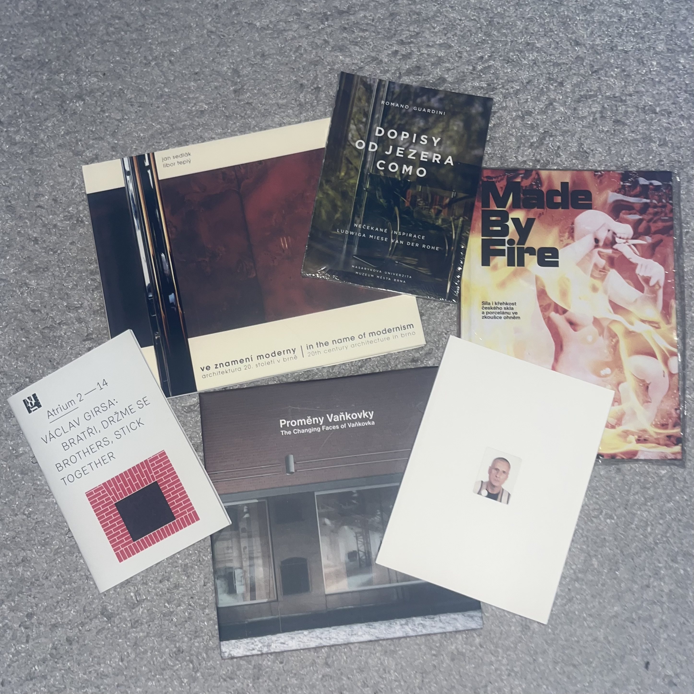
{kind=link}
29.listopad
Práce
Dneska jsem celý den strávil v práci, takže dnešní záznam bude kratší. Bohužel jsem neměl čas na pořádné sportování, ale teď mám v plánu zařadit alespoň dechové cvičení a pak si jít odpočinout.
Obávám se, že ani příští dva dny nebudou pro sport příliš příznivé, protože mám před sebou pět pracovních dnů v kuse.
28.listopad
Síla - záda - plíce
Je něco málo po třetí hodině. Mám přesazené kytky, za sebou dvakrát jógu, dechové cvičení a za hodinu vyrážím do práce na večerní směnu do zimy.
Dnešní jógové cvičení bylo opět s FITFAB Strong, konkrétně z jejich série Pure. První lekce se jmenovala HELL a trvala 15 minut. Už během cvičení mi bylo naprosto jasné, proč má název HELL (v překladu „peklo“). Jedná se o typ jógy, při kterém intenzivně zapojujete svaly na rukou, takže je potřeba mít nabranou sílu. Během lekce snad milionkrát přecházíte z planku do kočky a psa hlavou dolů. Vždycky jsem věděl, že moje silnější část těla jsou nohy, a že pravou stranu mám silnější než levou, což je asi přirozené.
Druhé dnešní jógové cvičení jsem si vybral RELAX, zaměřené především na zdravá záda. Po včerejším uvědomění ohledně mého držení těla se mi tohle cvičení hodilo dokonale. Musím přiznat, že po něm cítím příjemnou bolest z protažení. Uvědomil jsem si také, jak moje tělo pohyb nutně potřebuje. Během cviků jsem vnímal napětí v kyčlích, zádech i rukou.
Na závěr jsem opět zařadil dechové cvičení, ve kterém se mi daří čím dál lépe. Na konci videa už téměř bez problémů vydržím zadržet dech na minutu a půl. Tak třeba do roka zvládnu pět minut! :)
Dnes jsem se rozhodl přidat sem nejen jedno, ale rovnou obě videa, podle kterých jsem cvičil.
27.listopad
Boj správného držení
Dnešní zápis bude kratší, i když se toho během dneška dělo poměrně hodně.
Už jsem si podal přihlášku ke státnicím, což provázely menší komplikace, protože jsem omylem odevzdal špatnou verzi. Poté jsme měli dvouhodinový workshop, na který navázaly ateliérové konzultace. Ty zabraly celý den, takže jsem dorazil domů až po osmé hodině večer.
Celý den se snažím dávat pozor, abych si nesedal s nohou přes nohu. Včera jsem totiž během cesty šalinou seděl takto celých 15 minut, a jakmile jsem vystoupil, koleno mi jasně naznačilo, že tohle už není cesta. Proto teď dbám nejen na správné sezení, ale také na to, abych měl narovnaná záda. Ovšem musím říct, že správné držení těla je občas doslova boj.
Jak jsem zmínil, dnešní příspěvek bude kratší. Na závěr se ale musím pochlubit – konečně mi přišla kniha O čem mluvím, když mluvím o běhání od Harukiho Murakamiho. Jsem na ni opravdu zvědavý, a jakmile se do ní začtu, určitě se tady podělím o své postřehy a dojmy.
Mějte se krásně, já se jdu věnovat dechovému cvičení.
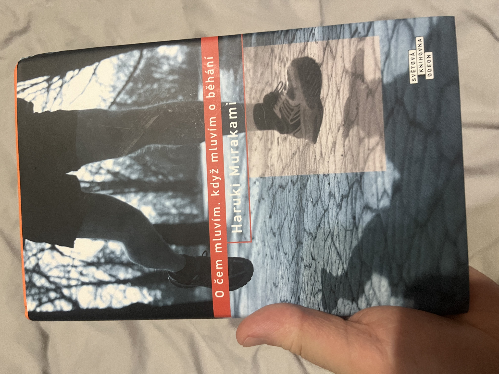
{kind=link}
26.listopad
Produktivně-únavný den
Po náročné konzultaci, která trvala téměř tři čtvrtě hodiny, jsem vyrazil plavat. Vzhledem k tomu, že vstup na bazén byl omezen na hodinu plus 15 minut na šatnu, musel jsem dneska spěchat, abych stihl vše, co jsem plánoval. Nejprve jsem uplaval 20 délek, poté jsem si na chvíli odpočinul ve vířivce a páře. Následovalo dalších 10 délek a na závěr opět relaxace ve vířivce a páře na zklidnění.
Dnešní příspěvek jsem zamýšlel delší, ale už je půl jedenácté a jsem po dnešku úplně vyčerpaný. Ráno jsem byl ve škole, pak plavat, následoval oběd a nákup, a teď ještě dokončuji dnešní blog, řeším resty a chystám se na Wim Hofovo dechové cvičení.
Takže vám přeji krásnou dobrou noc.
25.listopad
Zima!
Už je opravdu znát, že se výrazně ochladilo. Když jsem šel běhat kolem desáté hodiny, byly pouhé 4 °C. Oblékl jsem si termo kalhoty a tričko, na to kraťasy, sportovní triko, mikinu a šátek. Stále se snažím najít ideální oblečení do takového počasí. Dnes už ale vím, že po pár kilometrech bylo termo tričko příliš teplé. A kalhoty se ukázaly jako zbytečně přiléhavé, což nebylo úplně pohodlné. Příště asi vynechám termo a místo toho zvolím tepláky, které mě nebudou tolik škrtit.
Oblečení však nebylo jedinou překážkou dnešního běhu – problémem byly také povětrnostní podmínky. Tomu se bohužel asi nevyhnu, ale příště zkusím běžet mezi paneláky, kde by vítr nemusel být tak silný. Obávám se, že brzy možná přejdu na vnitřní variantu běhu a začnu chodit do posilovny na běžecký pás. Na druhou stranu, můj sportovní repertoár teď zahrnuje i vnitřní aktivity, takže si s klidným svědomím mohu dopřát plavání, jógu nebo domácí kardio.
Včera jsem se zmínil o Wim Hofově metodě, kterou jsem dnes opět praktikoval. Mám radost, že se mi podařilo zadržet dech na delší dobu než předtím, a jsem zvědavý, jaký pokrok udělám za měsíc. Někdy si říkám, že by bylo skvělé zadržet dech na 5 minut. (Samozřejmě berte s nadsázkou.) :)
Zítra mě čeká konzultace nad státnicovými tezemi, a poté se chystám opět plavat. Jsem zvědavý, jestli zvládnu uplavat více délek než minule. To je pro dnešní zápis vše. Na závěr přidávám písničku od Keshy, kterou jsem objevil o víkendu. Natolik mě nadchla, že jsem si ji pustil během dnešního běhu.
24.listopad
Odpočinek
Poslední dny bez sportu mě vedly k přemýšlení o různých aspektech zdravého života. Zdravý životní styl totiž nezahrnuje jen sport, ale je také důležité dodržovat správné a vyvážené stravování, což vlastně je třeba dodržovat i se sportem.
Zároveň je třeba nezapomínat na odpočinek, jak mentální, tak fyzický. Vzpomínám na svou nejaktivnější éru, kdy jsem cvičil pravidelně, a zároveň jsem si dával záležet na každodenním mentálním odpočinku. Ten zahrnoval například jógu na zklidnění mysli nebo meditaci. Je zajímavé, že i tento typ odpočinku vyžaduje aktivní přístup – člověk ho musí vědomě vykonávat.
Rozhodně si musím znovu najít čas na meditaci. Dnes jsem si na zkoušku pustil krátké video s vedeným dechovým cvičením od Wima Hofa. Možná ho znáte díky jeho Wim Hofově metodě, která spočívá v kombinaci dechových cvičení, otužování a meditace. Shodou okolností jsme se s Wimem Hofem narodili ve stejný den! :)
Pro ty, kteří by chtěli tuto metodu také prozkoumat, přikládám k dnešnímu zápisu video, podle kterého jsem dnes cvičil.
23.listopad
Rest day
Po tolika náročných týdnech se dnešní den stal takzvaným rest day . Proto toho dnes moc nenapíšu. Už jsem si ale podal přihlášku k magisterskému studiu a v týdnu si ještě musím podat přihlášku k bakalářské práci a ke státnicím. Poté už budu moci naplno tvořit a sportovat.
Jako malý bonus dnes přikládám retro workout video, které jsem vytvořil na střední škole v rámci závěrečné práce z předmětu animace.
22.listopad
Rozpouštění
Dnešní den se nesl v duchu úklidu a rozpouštění. Po tak dlouhé době už bylo nutné si doma pořádně uklidit. Vlastně jsem si uvědomil, že úklid je takový malý sport. Při vysávání za sebou vlečete těžký vysavač, při stírání prachu zase taháte kýbl plný vody, a když čistíte něco ve větší výšce, musíte se natáhnout nebo přenášet žebřík. Úklid tedy znamená hodně kroků a spoustu tahání těžkých věcí.
Ve druhé polovině dne jsem šel pomáhat s přípravou křtu časopisu, na kterém jsem se podílel. Tématem bylo „rozpouštění“ a časopis je volně k přečtení na stránkách CEDu. Křest byl nádherný – společně jsme se prošli po náměstí a rozpustili své myšlenky, tak jako to teď vlastně praktikuji každý den zde na blogu.
Dnes tu s vámi nesdílím žádnou aktuální fotku ani písničku, ale vložím fotografii, kterou jsem chtěl připojit už v prvním příspěvku, ale tehdy jsem ji nemohl najít. Ano, je to má první fotka z mého zimního běhu. Vlastně teď mohu tuto vzpomínku konečně rozpustit.
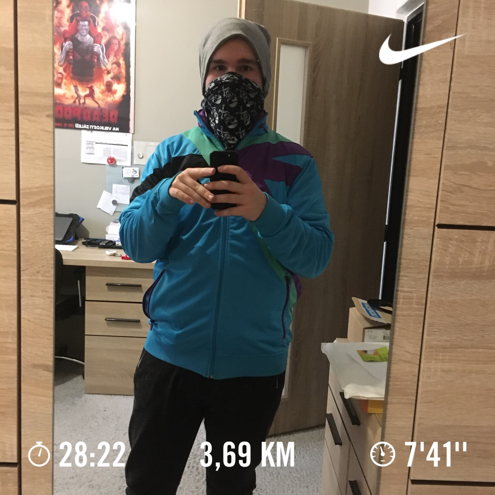
{kind=link}
21.listopad
Vernisáž a výstavy
Dnes jsem vyrazil do Prahy, protože večer byla vernisáž výstavy, pro kterou jsem tvořil dílo. Vyjel jsem brzy ráno, abych stihl projít Prahu a navštívit několik výstav. Poslední dobou na výstavách vyhledávám díla spojená se sportem, a ve Valdštejnské jízdárně jsem objevil obrazy od Georgese Karse. Na nich zachytil koupání u moře a hru s míčem. Tyto obrazy mě zaujaly na první pohled. Autor používá silnou obrysovou linku a postavy vyplňuje jednoduchými barvami bez stínování. Okolní krajina hraje až druhotnou roli, zatímco hlavní motiv vtahuje diváka do děje obrazu.
Dalším dílem, které mě oslovilo, byl obraz od Otakara Kubína. S motivem pohybu a lidské postavy si autor pohrál jednoduchou abstraktní formou. Postava je zachycena v nepřirozené pozici, jako by cvičila capoeiru nebo tančila. Výrazné anatomické detaily svalů podtrhují dynamiku a napětí celé scény.
Večer proběhla zmiňovaná vernisáž. Byl jsem velmi mile překvapen, protože přišlo nečekaně velké množství lidí. Díla působila impozantně a výborně spolu ladila. Dnešní den hodnotím velmi pozitivně. Přestože jsem nesportoval, nachodil jsem spoustu kroků. Na závěr jsem přemýšlel, co s vámi dnes sdílet – zda fotky obrazů, nebo záběry z vernisáže. Rozhodl jsem se, že ponechám obrazy a vernisáž v abstraktní rovině a nahraju vám dnes svůj graf kroků.
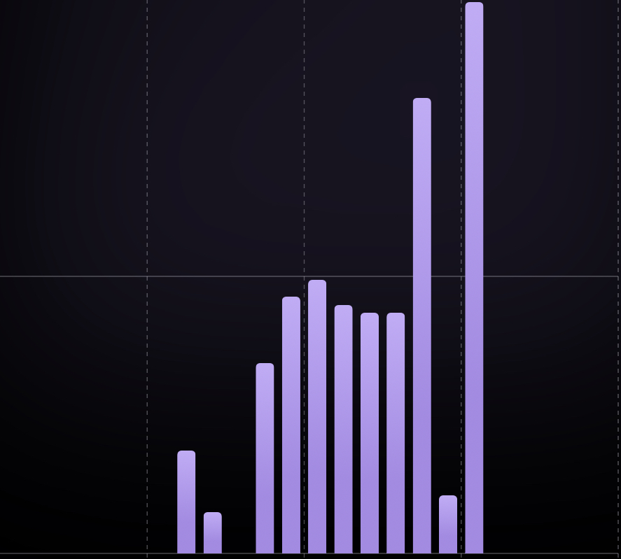
{kind=link}
20.listopad
Na led!
Dnes bych chtěl napsat pár slov o výstavě, kterou jsem navštívil v říjnu při cestě do Prahy. Jel jsem cíleně na výstavu Na led! Hokej a bruslení v obrazech, která se konala v paláci Kinských. Výstava představovala historii bruslení a hokeje ve výtvarném umění. Zároveň se věnovala i historii českého hokeje – od mistrovství světa, přes éru socialismu až po současnost.
Výstava díky tomu působila velmi dynamicky. V galerii bylo k vidění spousta klasických obrazů, dobových fotografií i moderních ztvárnění sportu. Celou výstavu završila díla vytvořená při příležitosti letošního mistrovství světa.
Přikládám fotku obrazu, který na mě během výstavy velmi zapůsobil. Jeho atmosféra a zpracování mi zůstaly v paměti jako jeden z vrcholů celé expozice.
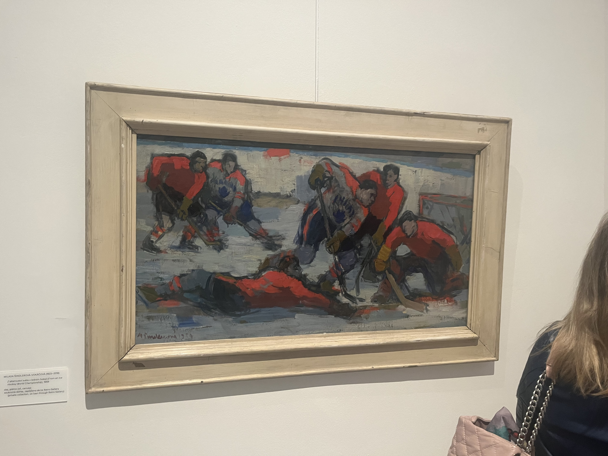
{kind=link}
19.listopad
Spadla lžička do kafíčka
Čtyřicet délek, neboli tisíc metrů – to je vzdálenost, kterou jsem dnes uplaval. Od minulého plavání už určitě vnímám jisté zlepšení a cítím své tělo, které si dnes pořádně máklo. Zároveň si ale uvědomuji chyby, které při plavání dělám. Všiml jsem si, že více zapojuji pravou stranu těla. Při plavání prsou jsem používal spíše pravou ruku a občas špatně synchronizoval pohyby nohou s rukama, což mě místy zpomalovalo. Hodně mi ale pomohlo, když jsem si během délek počítal čas. Dokonce mě to i motivovalo, a tak jsem zvládl uplavat 25 metrů za 40 sekund.
Večer jsem byl na cuppingové degustaci kávy. Čekalo na nás osm druhů kávy, které jsme si postupně nejdřív namleté očichali, poté zalité horkou vodou při louhování znovu očichali a nakonec ochutnávali. Ochutnávání bylo zajímavé tím, že jsme si měli nabrat pouze půl lžíce a kávu hlasitě srknout. Po několika kolech těchto ochutnávek mi už začaly jednotlivé chutě splývat. Na závěr jsem si vybral kávu z Guatemaly, kterou jsem si koupil domů.
Dnešní den byl poměrně nabitý, ale přesto se cítím zrelaxovaně a spokojeně. Zítra mě čekají konzultace ohledně bakalářské práce, ke které jsem právě dopsal text. Doma si pak ještě dám lekci jógy.
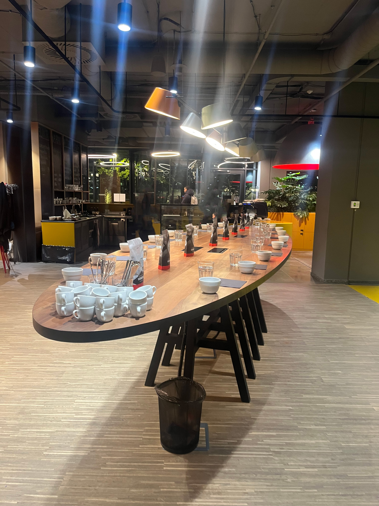
{kind=link}
18.listopad
Předání, psaní a práce
Dnes se mi povedlo usnout až ve dvě hodiny ráno a vstával jsem už v sedm, protože jsem jel odvézt dílo na předání. Byl jsem tedy celý den velmi unavený a cítím, že na mě jde nějaká nemoc – nejspíš po dvou pětihodinových směnách strávených venku v zimě. Dílo je ale úspěšně předané, a ve čtvrtek pojedu na vernisáž výstavy.
Odpoledne jsem se věnoval psaní textu k anotaci své bakalářské práce, jejíž součástí je i tento blog. Po tolika dnech, co se tu písemně svěřuji, jsem si myslel, že napsat anotaci bude hračka. Ale pořádně jsem se u toho zapotil, a stejně to ještě nemám hotové.
Teď jsem v práci a v rychlosti píšu dnešní blog. Zítra už zase vyrážím plavat a věřím, že si najdu trochu více času na psaní. A abych vás dnes jen tak neodbyl, přikládám fotku naložených děl všech autorů v dodávce.
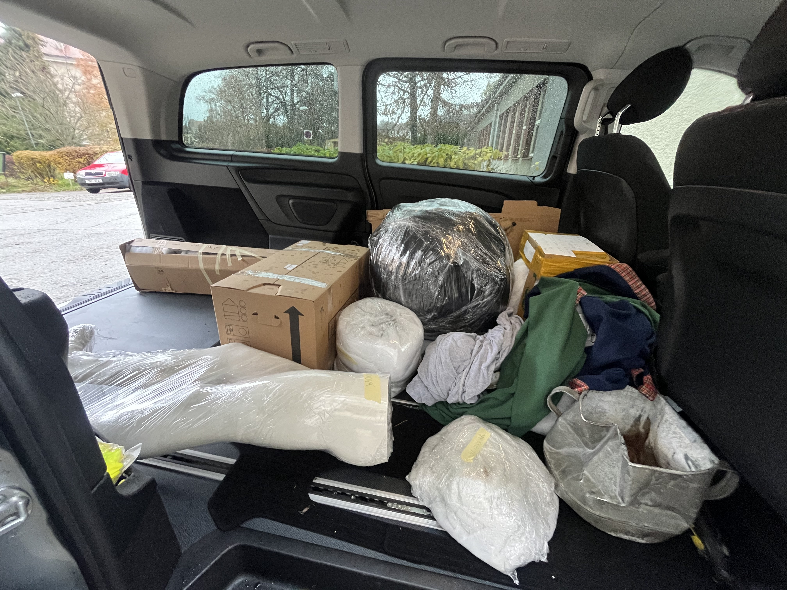
{kind=link}
17.listopad
Moje tělo, moje plavky
Přiznám se, že dnes jsem vůbec necvičil, protože dokončuji zbytek věcí na výstavu a už balím. Večer jdu do práce, takže to musím všechno stihnout, aby zítra předání proběhlo úspěšně.
Dnes mi vlastně přijde důležité svěřit se svými sportovními zážitky po závodě. Jelikož už nepotřebuji nutně trénovat na závod, věnuji se i jiným sportovním činnostem. Koupil jsem si nové plavky, abych mohl pořádně plavat. Bylo pro mě docela důležité vybrat ty správné plavky. Proto jsem hledal inspiraci hlavně u profi plavců, kteří nosí “slipové“ plavky. A musím říct, že to rozhodně nebyla chyba. Nejprve jsem měl kolem těchto plavek určité obavy. Pro spoustu lidí je tento typ plavek “teplý“ a standardem se staly kraťasové plavky. Ale když jsem šel plavat, byl to naprosto úžasný pocit. Nic mi nebránilo v pohybu a byl jsem schopný uplavat spoustu délek a pořádně si to užít.
Proto dnešní blog zakončím “poselstvím“. Není třeba se trápit v něčem, co nám brání ve volném pohybu. Je důležité nosit to, co je nám naprosto pohodlné, a vykašlat se na to, co si myslí ostatní. Protože my jsme ti, kdo na sobě pracují a snaží se zlepšovat!
16.listopad
Závod
Jak jsem slíbil, tak dnes budu psát o závodě. Závod proběhl 12.10.2024 na brněnské přehradě. Z rána bylo poměrně chladno. Ještě předchozí den mi nebylo moc dobře. Koleno sice už fungovalo, ale stále jsem se zbavoval teploty. Vybavil jsem se tunou kapesníků v kapsách.
Ostatní byli poměrně nervózní, ale já to bral s nadhledem. Zaběhnu tolik, kolik zvládnu, popřípadě to dojdu, každopádně na startovní čáru jsem šel sebevědomě a s vědomím, že to zvládnu.
Závod začínal těmi nejrychlejšími a my jsme vyráželi až někde v polovině. Ze začátku mi někteří lidé zavazeli, jelikož jsem měl na začátku dobré tempo a takových pět kilometrů jsme s Markem běželi souběžně. U prvního stánku s lehkým občerstvením se mi ztratil z dohledu. Tak jsem aspoň do sebe naklopil ionťák a běžel dál.
Nestihl jsem si natrénovat běh do kopce a přesně tam nastala komplikace. Tak jsem si kopce napůl vyšel a vyběhl. Při každém dalším zdolaném kilometru jsem cítil lehkou úlevu.
U jedenáctého kilometru jsem už byl docela vyždímán. Naštěstí se mnou běžela paní, která mě svými slovy podpořila natolik, že jsem nahodil tempo ze startu. Chvilku na to se objevili naši dva přátelé, kteří na nás čekali s transparentem. Tahle vzájemná podpora mě na běhu velmi baví.
Poslední kilometr byl zase do kopce, ale v cíli už byly davy lidí a medaile. Byl to krásný pocit. Po všech útrapách jsem to zvládl s krásným časem - 1 hodina a 29 minut. Jsem na sebe stále hrdý a už se těším na příští ročník, na který jsem se již zaregistroval.
Jako bonus dnes přikládám jednu z mých oblíbených písniček, kterou mám v playlistu na běh.
- Závodník Honza
15.listopad
Tvorba, harmonika a jóga
Ráno jsem si vyzvedl vygravírovanou desku pro své dílo, které chystám na výstavu o násilí páchané na seniorech. Po zbytek dne jsem pracoval na dalších částech díla.
Abych se trochu odreagoval, vrhl jsem se k harmonice, na kterou jsem se začal učit hrát před třemi týdny. Zatím se snažím naučit písničku - „Take me home, country roads”. S mamkou jsme spolu vytvořili duo a hrajeme českou verzi - „Veď mě dál, cesto má”. Mamka je zpěvačka a já hlavní hudebník. Třeba to jednoho dne někam dotáhneme. :)
Po tom všem se mi povedlo najít alespoň částečný prostor pro to, abych dneska praktikoval nějaký sport. A tak jsem si dal jóga workout s videem Báry Sedlákové zaměřené na posílení a hubnutí. Jsem velmi rád, že mohu dnes po tomto cvičení říct, že jsem si mákl, jelikož díky tomu mohu vnímat své limity a vnímat zdolané milníky a cíle.
Uvědomuji si, že jsem ztratil svoji jóga formu, ale mám v plánu se vrátit do formy, ve které jsem býval. Proto na závěr přikládám video, podle kterého jsem cvičil, kdybyste se chtěli přidat ;)
A zítra jestli budu mít čas, napíšu už něco o několikrát zmiňovaném závodu.
Namasté
14. listopad
Překážky
Jedenáct dní před blížícím se závodem jsem zaběhl 8,12 km bez přestávky a to s časem 49 minut. V tu chvíli jsem si byl již jistý, že závod musím zvládnout, i přesto, že mi ještě chybělo 6 km do požadované délky trasy, kterou musím při závodu zdolat.
To jsem však netušil, že další den se mi mé koleno bude mstít. Od této chvíle jsem byl opatrnější a dal jsem si šestidenní odpočinek. Závod se však blížil a já jsem musel ještě trochu to své tělo procvičit. Dal jsem si půlhodinový běh, abych zbytečně neztrhal koleno. A preventivně jsem mazal koleno krémem a nosil ortézu.
Čím víc se závod blížil, tím víc se mé tělo vzpouzelo. Bolest kolene přetrvávala a do toho se mi spustila teplota. Byl jsem si zcela vědom toho, že jsem své tělo vystavil velké námaze, ale cítím, že to bylo zapotřebí. Nemohl jsem se vzdát. Nemohl jsem se vzdát svého snu a musel jsem udělat vše pro to, abych se mohl zúčastnit a překonat sám sebe.
13. listopad
Naděje
Po asi dvou letech pauzy jsem vyběhl znovu. Motivovaný zvládnout závod jsem se vrhl s nadšeným tempem do ulic. Pro první rozběhání jsem si nedával, příliš veliké cíle, naopak jsem se rozhodl, že si zaběhnu svou obvyklou trasu o délce 5 km.
S překvapením jsem zjistil, že na tom nejsem, i po tak dlouhé pauze od běhání, zase tak špatně, jako v mých úplných začátcích. Bylo to pravděpodobně podmíněno tím, že jsem již věděl, jak koordinovat dýchání při zátěži.
Po celé září jsem si držel průměrné tempo 5′31″ a překonával sám sebe. Obvyklou trasu dlouho 5 km jsem při druhém běhu zvládl zcela bez zastavení. V tu chvíli jsem cítil naději a věřil, že „Vokolo Priglu“ zdolám.
V září jsem celkově zaběhl tři běhy a s konečnou jsem se dostal na 6,21 km, tudíž mi zbývalo nacvičit dalších 8 km.
Na závěr dnešního příspěvku přikládám písničku od MIDI LIDI, která mě doprovázela při každém mém běhu i na prýglu.
12. listopad
Začátky
Je to přesně měsíc od toho, co jsem si zaběhl svůj první závod v životě. Závod měl 14,1km a běžel jsem se svými třemi přáteli.
Přišel s tím Marek na začátku září, že bychom si mohli zaběhnout závod kolem brněnské přehrady. A mě to docela i nadchlo, neboť jsem si nikdy závod nezaběhl.
- - -
Během covidové pandemie, když jsem maturoval, jsem začal běhat. Bylo to v zimě, v únoru. Pro začátečníka to byla docela rána.
A tak jsem poprvé vyběhl v termo oblečení - kalhotech a triku, dále jsem měl obyčejný tepláky, triko, mikinu, retro bundu, čepici a šálu. To jsem si zaběhl pouze 3,69km s časem 7′41″.
V té době bylo mým cílem shodit nějaká ta kila dolů. S touto myšlenkou jsem začal běhat. Ale u běhu to neskončilo. Cvičil jsem podle různých videí - kardiovaskulární, yoga, HIIT a mnoho dalších. I několik playlistů na YouTube jsem si pro to vytvořil.
Z běhání jednou týdně jsem se dostal k různým sportovním aktivitám, každý den v týdnu, což vnímám zpětně velmi pozitivně. Co již jako pozitivní nevnímám je to, že k mé cestě patřilo pouze jedno jídlo denně z důvodu špatné edukace o hubnutí. Po měsíci, co jsem jedl jednou denně, jsem zjistil, jak je tato metoda nevhodná, protože mé tělo potřebovalo přijímat živiny a energii v podobě kvalitních potravin a pokrmů. To jsem nevěděl nebo mi to tak úplně nedošlo, ale jak se říká, každá zkušenost dobrá.
A teď vás učitě zajímá, jak to dopadlo. :) Maturoval jsem v kalhotech a košili velikosti M.
Ale to se mi bohužel nepovedlo udržet. Ale o tom až jindy.
Na závěr přikládám k měsíčnímu výročí fotku týmu s medailemi po konci závodu.
Ahoj
- Běžec Honza